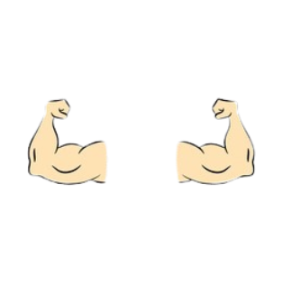

Overview
Being quick-witted and audacious, ENTPs aren’t afraid to disagree with the status quo. In fact, they’re not afraid to disagree with pretty much anything or anyone. Few things light up these personalities more than a bit of verbal sparring. If the conversation steers into controversial territory, the better. ENTPs are knowledgeable and curious with a playful sense of humor, and they can be very entertaining. ENTPs are known to be rebellious and they may seem overly defiant but their tendency to test boundaries has more to do with their desire for innovation and change.
Strengths
ENTPs rarely pass up a good opportunity to learn something new, especially abstract concepts. ENTPs have a way with words and wit that others find intriguing. They are also quick thinkers, having tremendously flexible minds and are able to shift from idea to idea with little effort.
Weaknesses

ENTPs are so rational that they often misjudge others’ feelings and push their debates well past others’ tolerance levels. ENTPs struggle with organisation, structure and all things practical as they prefer spontaneity and novelty.
Relationships

Romantic: Some partners may tire in the face of ENTPs’ need for constant engagement. While their vigor can be charming, it can also wear down even the most patient partner.

Friendships: The epitome of ENTPs’ friendships is when someone can hold their ground in these arbitrary debates with valid, rational arguments. They are generally very open to new perspectives, enjoy having their ideas challenged and appreciate friends who are not afraid to disagree with them.
Famous People

 Jack Sparrow
Jack Sparrow
Career Paths

- Financial Analyst
- Animator
- Translator
- Private Detective
- Landscape Architect
- Psychologist
- Professor or College Instructor
Random Fox
🦊 Foxes are clever, solitary, social animals and also independent
Perfect partner for ENTPs